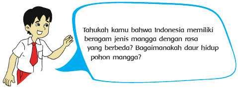
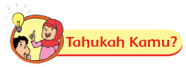
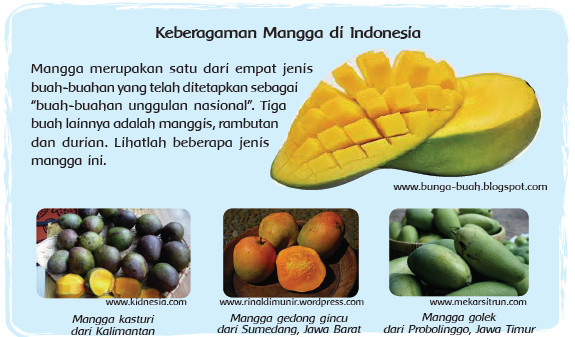
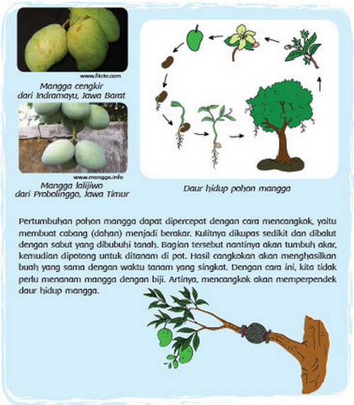
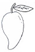
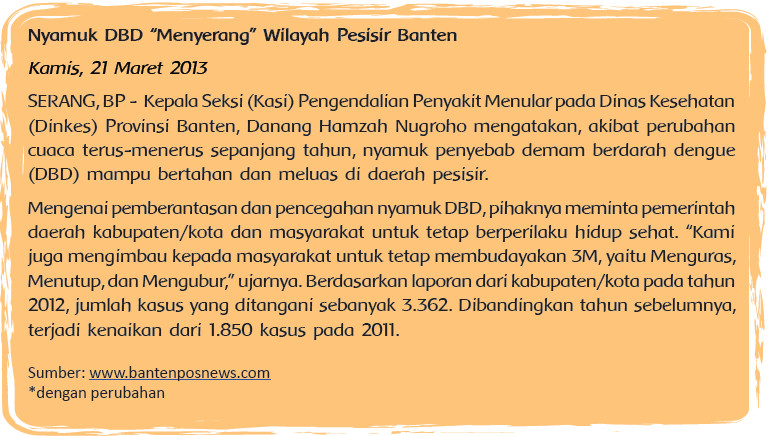
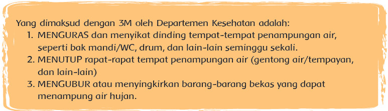
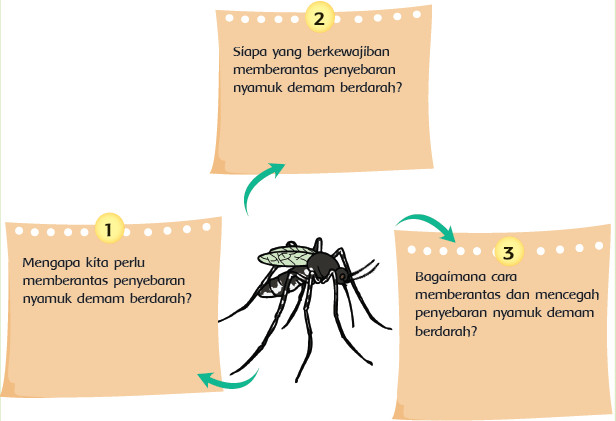
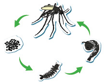
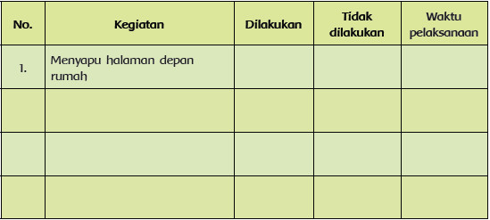

Pembelajaran 2
Activity


Siti berencana mengadakan acara makan rujak bersama teman-teman di dekat rumahnya.
Pada hari Minggu, ia ikut pergi ke pasar bersama ibu untuk membeli mangga, mentimun,
jambu air, dan beberapa buah lainnya. Betapa takjubnya Siti melihat keberagaman mangga
di pasar itu. Berikut ini beberapa di antaranya.


Diskusikan pertanyaan-pertanyaan berikut dengan kelompokmu!
• Apa manfaat yang kita dapatkan dari keberagaman buah mangga yang dimiliki
negeri kita?
• Berdasarkan informasi tadi, apa yang dilakukan manusia terhadap daur hidup
mangga?
• Bagaimana akibat yang ditimbulkannya?
• Apakah menurutmu cara itu baik? Mengapa?
Sampaikan hasil diskusi kelompokmu dengan kelompok lain.

Buatlah diagram daur hidup mangga disertai penjelasan masing-masing daur.
Betapa sedihnya hati Siti. Acara makan rujak di rumah Siti gagal terlaksana. Dua orang
temannya tiba-tiba harus dirawat di rumah sakit karena terjangkit demam berdarah. Ia
pun bertanya kepada ayahnya tentang penyakit ini.
Ayah Siti menunjukkan sebuah berita di koran tentang nyamuk demam berdarah. Ayo kita
baca dengan saksama! Kamu dapat menggarisbawahi kata atau kalimat yang menurutmu
penting.


Ceritakan kembali informasi tentang nyamuk DBD tadi dalam peta pikiran berikut!

Tahukah kamu bagaimana daur hidup nyamuk?
Daur hidup nyamuk

Setelah mengetahui berbagai informasi tadi, menurutmu,
apa yang dapat kita lakukan atau kita ubah terhadap
daur hidup nyamuk agar penyakit demam berdarah
berkurang di lingkungan kita?
Diskusikan dengan seorang temanmu!
Tuliskan hasilnya di bawah ini.
Tukar jawabanmu dengan jawaban seorang temanmu. Berilah komentar atau pertanyaan
tentang hasil jawaban temanmu!
Siti senang sekali mendapat pengetahuan baru tentang cara mencegah penyebaran nyamuk
demam berdarah. Namun, Siti juga berpikir bahwa tidak hanya nyamuk yang menyebabkan
lingkungan menjadi tidak sehat. Ragam serangga lain, seperti lalat dan kecoak, juga dapat
berakibat kurang baik. Siti pun mengusulkan kepada ayahnya agar diadakan kerja bakti
untuk membersihkan lingkungan. Bagaimana denganmu?
Praktikkan hal-hal yang dapat kamu lakukan untuk menjaga kebersihan dan kesehatan
di lingkunganmu! Kegiatan ini dapat kamu lakukan hingga akhir pembelajaran 6.
Beri tanda centang pada kolom yang sesuai.

• Apa hasilnya jika kamu ikut membantu menjaga kebersihan dan kesehatan di
lingkunganmu?
• Apa akibatnya jika kamu tidak ikut membantu menjaga kebersihan dan
kesehatan di lingkunganmu?
1. Tuliskan apa saja yang telah kamu pelajari dari kegiatan hari ini.
2. Apakah kamu sudah dapat menceritakan kembali informasi tentang nyamuk
demam berdarah dalam bentuk peta pikiran?
3. Apakah kamu merasa berkewajiban menjaga kesehatan lingkunganmu?
Mengapa?
4. Hal-hal apa lagi yang dapat kamu lakukan untuk menjaga kesehatan
lingkunganmu?
5. Bagaimana perasaanmu setelah belajar tentang daur hidup dan hubungannya
dengan tindakan manusia?
Kerja
Diskusikan dengan orang tuamu untuk menentukan 4 cara dalam menjaga
kebersihan dan kesehatan lingkungan rumah!